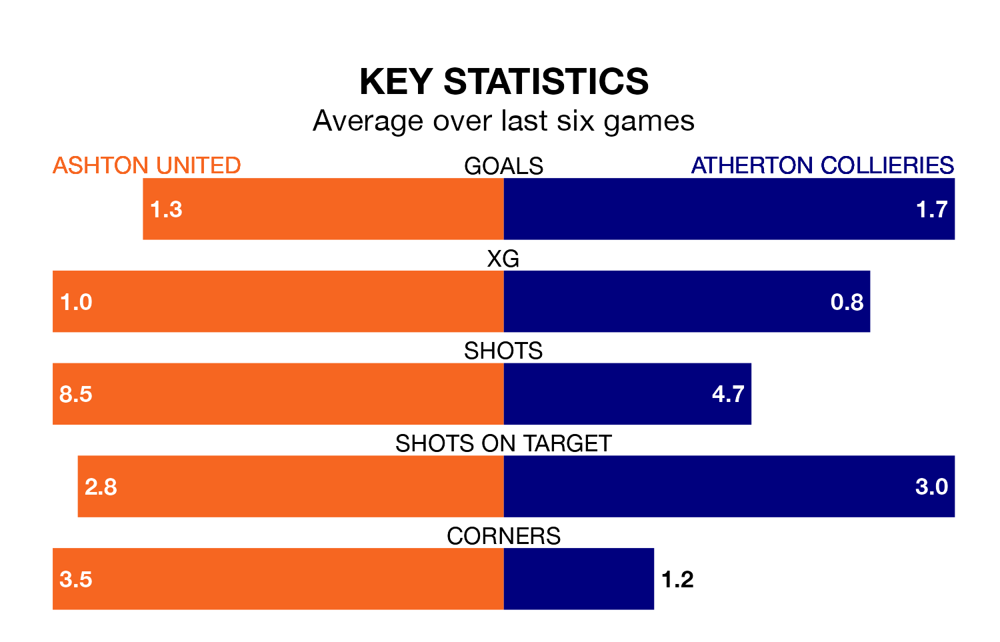

Ashton United are heavy favourites to keep all three points at home in Saturday's kick-off against Atherton Collieries.
Ashton, who sit 11th in Northern Premier League with 26 games played, are priced at 1.4 to seal victory at Hurst Cross.
Sitting 11 places and 26 points behind them in the table, Atherton Collieries are 6.5 to win with *Betting Company*, while the draw is at 4.5.
In the last 10 years, Ashton and Atherton Collieries have played each other on 10 occasions. Ashton won five of them, Atherton Collieries two, and they drew three times.
On average, Ashton scored 1.7 goals and Atherton Collieries 1.2 in those matches.
Their last meeting was on November 25, when Ashton won 2-1 away.
Ashton are in bad form in Northern Premier League, with no wins and four draws from their last six games.
With a win and a draw over that period, Atherton Collieries's form is similar – they have both taken four points from 18.
With 28 goals in 25 games so far this season, the away side are scoring at below the league average rate with 1.1 goals per game. And they are conceding more than average, letting in 64 goals at a rate of 2.6 per game.
United, meanwhile, are average scorers, with 1.7 goals per game. They have also conceded 1.7 goals per game.
Ashton's last match was on January 20, a 3-3 draw against Morpeth Town.
Atherton Collieries lost 3-1 against Matlock Town last time out, on January 13.
Updated: 08:51 (UTC), 25/01/24